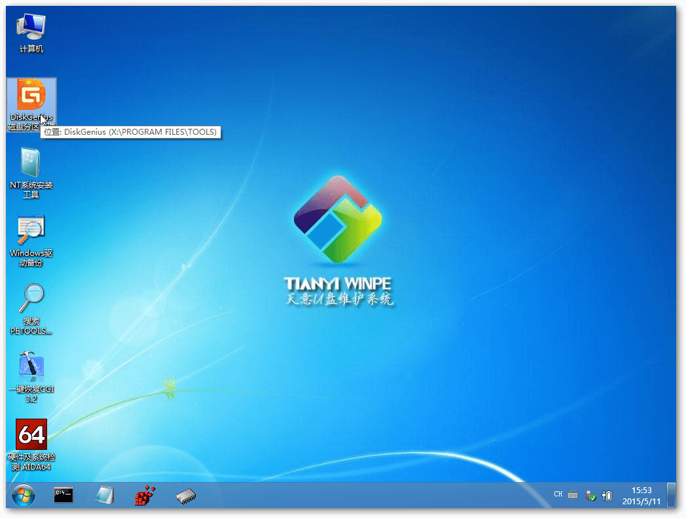
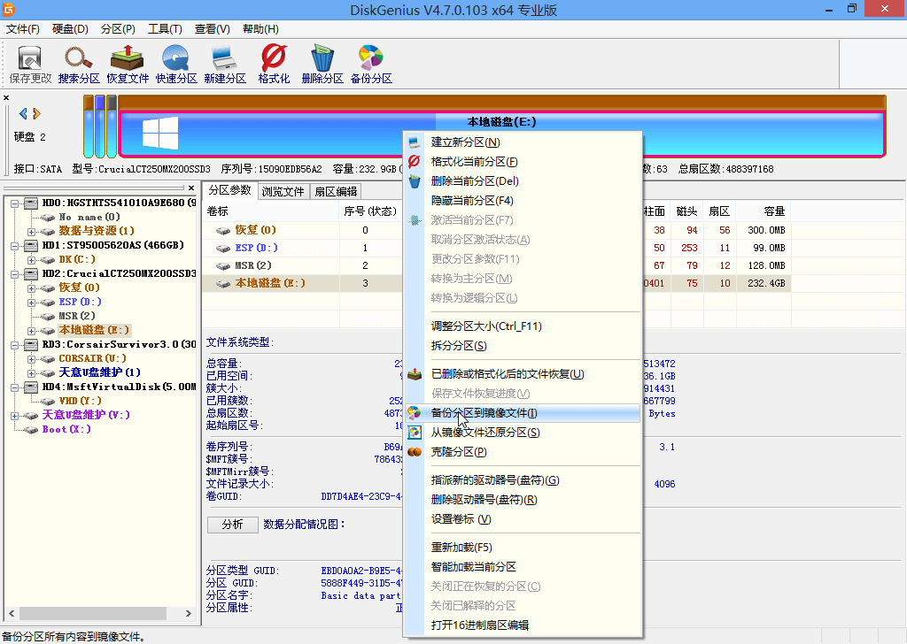
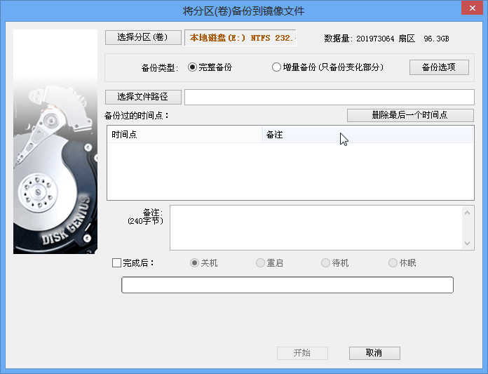
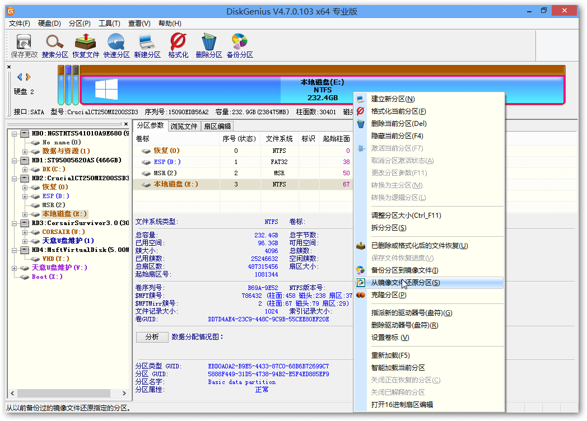
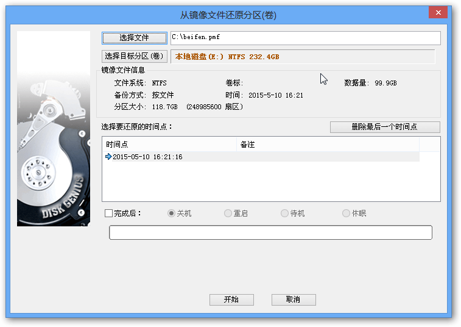
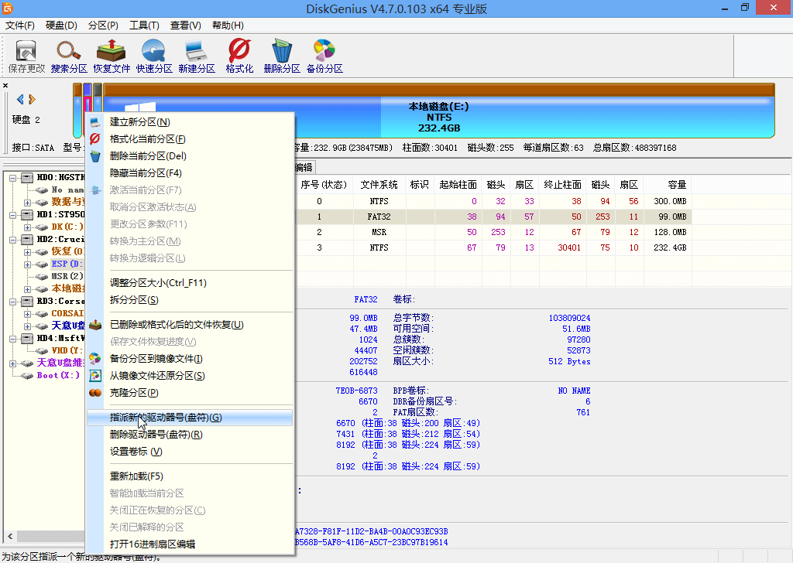
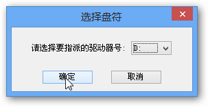
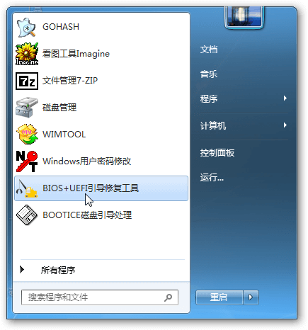
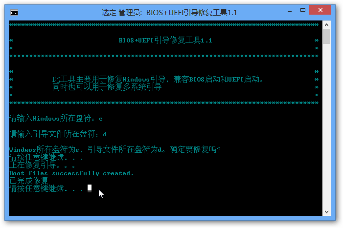

上周的周末，新买的SSD硬盘到了，需要把旧系统盘的数据迁移至新的SSD上，最开始考虑了Winodws系统映像的方法进行迁移，但通过恢复U盘进入到恢复步骤时，总是提示我无法格式化硬盘，所以放弃了这个方案。
在查询无数资料后，考虑到Win 8.1 Update的组成，突然灵光一现，尝试用Win 8.1的系统盘格式化新的SSD，从而使新的磁盘系统分区和原来的保持一致，通过备份分区数据，还原分区数据的方式，完成系统迁移。
本文就是就是记录下这个操作流程，以备后人参考，如果您有更好的方法，请您不吝赐教，谢谢！
废话也说完了，我们下面进入到正题。
一、准备工具¶
- 天意u盘维护系统技术员版3.0
- UltraISO
- cn_windows_8.1_with_update_x64_dvd_6051473.iso
- cn_windows_8.1_with_update_x86_dvd_6051523.iso
- Windows 8 USB Installer Maker
- DiskGenius v4.7.1 免费版
- 16G U盘 可量产
如果遇到上述链接无法访问，请您自行想办法。
友情提示：中国拥有世界上第八大奇迹——长城。
二、制作Winodws 8.1 Upadate U盘安装盘¶
这个大家应该已经很熟悉了吧！用我提供的Windows 8 USB Installer Maker工具，基本制作过程是傻瓜式安装。
三、安装Winodws 8.1 Upadate到新系统盘¶
这步我也就简单说下，基本上都会做，说一下几个需要注意的地方。
1、重启进入Bios把安全启动关闭，以免后续从PE、U盘安装盘启动不了。 2、一定保证新盘的分区方式和旧盘一样，我一般采用的系统盘自动分区。 3、进入不进入系统都可以，等会儿都要覆盖的。
四、安装天意U盘PE¶
这步在天意大大贴子中已经写的很清楚了，我就不重复给出制作U盘PE的教程了。这里仅给出一个UltraISO可用的用户名和注册码。
用户名：王涛 注册码：7C81-1689-4046-626F
五、备份旧系统盘数据¶
1、如下图所示，进入到天意PE中，打开DiskGenius。

2、选中原系统分区，单机鼠标右键，可以看到备份分区到镜像文件，点击它。

在这里您需要注意查看下旧系统分区的数据量是否远小于新系统盘的分区大小。
3、选择文件路径，并点击开始，就可以开始备份了。

六、还原旧系统盘数据到新系统盘¶
1、选中新系统分区，单机鼠标右键，可以看到从镜像文件还原分区，点击它。

2、选择刚刚备份的文件，并点击开始，进行系统迁移。

七、重新设置引导参数¶
1、在天意PE中默认没有给引导分区指派盘符，所以我们需要找到系统的引导分区，单机鼠标右键，可以指派新的驱动器号，点击它。

2、选择您想要赋予的盘符，选择它，记住它，并单击确定。

3、打开开始菜单，找到BIOS+UEFI引导修复工具，打开它。

4、按照提示填写Windows系统分区盘符，引导分区盘符，并按下回车，确认信息后，再次按下回车。

5、出现上图最后一行的提示，您可以关闭程序，并重启电脑。
八、结语¶
以上就是我此次系统迁移的基本过程，如果您有没看懂的地方，您可以留言，我看到后会及时回复。
P.S. 天意大大说我提供这个版本PE中DiskGenius有一些问题，但是在操作过程中我没有遇到，如果您遇到了，可以用DiskGenius的原版（在第一章节中有提供下载地址）尝试下。